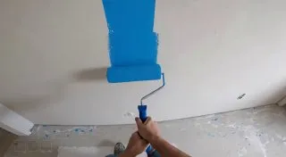
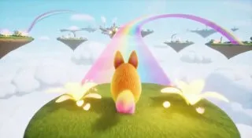

Без рубрики
Telegram
Меня ГОРАЗДО больше, чем GPT 5, впечатлила недавно
18 августа 2025 · 54 просмотров · оригинал в Telegram ↗



🎬 В оригинале есть видео — смотрите по ссылке выше. Ниже — кадр из превью, если он сохранился.
🤯 Меня ГОРАЗДО больше, чем GPT 5, впечатлила недавно презентованная нейронка от Google - Genie 3, через неё по банальному промпту можно получить целый игровой мир: по факту - целую игру всего лишь введя запрос! парочку примеров прикрепляю ниже, больше - можете посмотреть на их сайте.
Что ждёт игровую индустрию после того, когда это нейронка выйдет в открытый доступ? сейчас она доступна лишь ограниченному кругу исследователей и экспертов. Но просто представьте: целый мир по запросу, теперь игру, условно для создания которой требовалась целая команда специалистов и месяцы работ - сможет создать любой школьник меньше чем за час..
Уже представляю новый наплыв десяток тысяч подобных игр в Steam, мы скоро достигнем уже того этапа эволюции, когда все комплексные задачи сможет выполнять ИИ, по сути он уже умеет делать музыку, писать книги, картины, генерировать видео, неотличимые от реальных, и выполнять автоматизировано сотни других задач, следующий шаг - целые миры по запросы.
😊 Но я не навожу панику, не подумайте, наоборот осуждаю тех, кто так делает. Мы в интересное время живём, нет смысла с этим бороться, это естественная промышленная революция, но человек всегда остаётся главным элементом в этом мире, а ИИ - лишь инструментов в его руках, а не наоборот. Всегда ручной труд и живое общение будут цениться выше, чем ИИшный труд и ИИшное общение.
Да, в любой стезе, включая творческую - это может лишить в какой-то мере мотивации, однако стоит учесть, что любой текущий ИИ по сути учился на том, что так или иначе придумывали люди, он не может, грубо говоря, придумать что-то своё из ничего, у нас всегда будет возможность сделать следующий шаг, а ИИ просто упростит кучу этапов к его выполнению, так что я уверен - всё будет хорошо.
Что думаете про генерацию миров по запросу?? 🕊
#АИ@NomberLife #игры
Что ждёт игровую индустрию после того, когда это нейронка выйдет в открытый доступ? сейчас она доступна лишь ограниченному кругу исследователей и экспертов. Но просто представьте: целый мир по запросу, теперь игру, условно для создания которой требовалась целая команда специалистов и месяцы работ - сможет создать любой школьник меньше чем за час..
Уже представляю новый наплыв десяток тысяч подобных игр в Steam, мы скоро достигнем уже того этапа эволюции, когда все комплексные задачи сможет выполнять ИИ, по сути он уже умеет делать музыку, писать книги, картины, генерировать видео, неотличимые от реальных, и выполнять автоматизировано сотни других задач, следующий шаг - целые миры по запросы.
😊 Но я не навожу панику, не подумайте, наоборот осуждаю тех, кто так делает. Мы в интересное время живём, нет смысла с этим бороться, это естественная промышленная революция, но человек всегда остаётся главным элементом в этом мире, а ИИ - лишь инструментов в его руках, а не наоборот. Всегда ручной труд и живое общение будут цениться выше, чем ИИшный труд и ИИшное общение.
Да, в любой стезе, включая творческую - это может лишить в какой-то мере мотивации, однако стоит учесть, что любой текущий ИИ по сути учился на том, что так или иначе придумывали люди, он не может, грубо говоря, придумать что-то своё из ничего, у нас всегда будет возможность сделать следующий шаг, а ИИ просто упростит кучу этапов к его выполнению, так что я уверен - всё будет хорошо.
Что думаете про генерацию миров по запросу?? 🕊
#АИ@NomberLife #игры